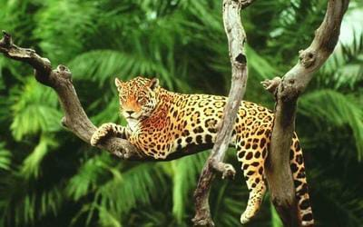
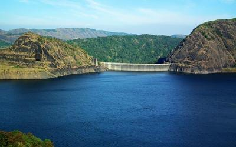

Idukki

Idukki is one of the 14 districts of Kerala state, India, created on 26 January 1972. This beautiful High range district of Kerala is geographically known for its Mountainous Hills and Dense Forests. For the people of Kerala, Idukki is always associated with Power Generation. About 66% of the State’s Power needs come from the Hydroelectric Power Projects in Idukki. Idukki which lies in the Western Ghats of Kerala is the second largest district in area but has the lowest population density. Idukki has a vast forest reserve area; more than a half of the district is covered by forests. The urban areas are densely populated whereas villages are sparsely populated. Idukki is also known as the spice garden of Kerala. Idukki's speciality lies in 650 feet long and 550 feet high arch dam across the Kuravan Kurathi mountain, which is the largest in the country. Anamudi, which is the highest peak in India, south of the Himalayas, is also located in Idukki. Idukki is one of the districts in the state that has abundant scope for promotion of eco-tourism if proper infrastructure and promotional activities are provided.
Hot Tourist Spots
Idukki Wildlife Sanctuary

Idukki Arch Dam
